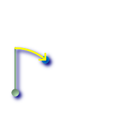
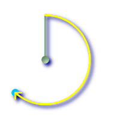

ST_Azimuth — pointAの鉛直線からPointBへの右回りの方位を北を基準にしたラジアン単位で返します。
float ST_Azimuth(geometry pointA, geometry pointB);
float ST_Azimuth(geography pointA, geography pointB);
与えられたポイントジオメトリで定義される線分の方位をラジアン単位で返します。2点が一致する場合にはNULLを返します。方位は北を基準として時計回りに計測します。北は0、東はPI/2、南はPI、西は3PI/2になります。
方位は、参照面と点との間の角度で定義される数学的概念です。この場合はラジアンで計測されます。
初出: 1.1.0
機能強化: 2.0.0では、ジオグラフィが導入されました。
ST_Azimuthは、ST_Translateと併用して、垂直軸に沿ってオブジェクトをシフトさせる場合に、特に便利です。これの例として、Plpgsqlfunctions PostGIS wiki sectionを参照して下さい。
度単位のジオメトリの方位
SELECT ST_Azimuth(ST_Point(25,45), ST_Point(75,100))/(2*pi())*360 as degA_B,
ST_Azimuth(ST_Point(75,100), ST_Point(25,45))/(2*pi())*360 As degB_A;
-- ご注意: 度に関するPostgreSQL組み込み関数を使うと覚えやすいです。
-- 両方とも同じ答えです。
SELECT degrees( ST_Azimuth(ST_Point(25,45), ST_Point(75,100)) ) as degA_B,
degrees( ST_Azimuth(ST_Point(75,100), ST_Point(25,45)) ) As degB_A;
dega_b | degb_a
------------------+------------------
42.2736890060937 | 222.273689006094
 緑: 開始点(25,45)で、鉛直方向に行きます。黄: degA_Bを示す行程(方位)です。
|  緑: (75,100)が開始点で、鉛直方向に行きます。黄: degB_Aを示す行程(方位)です。
|